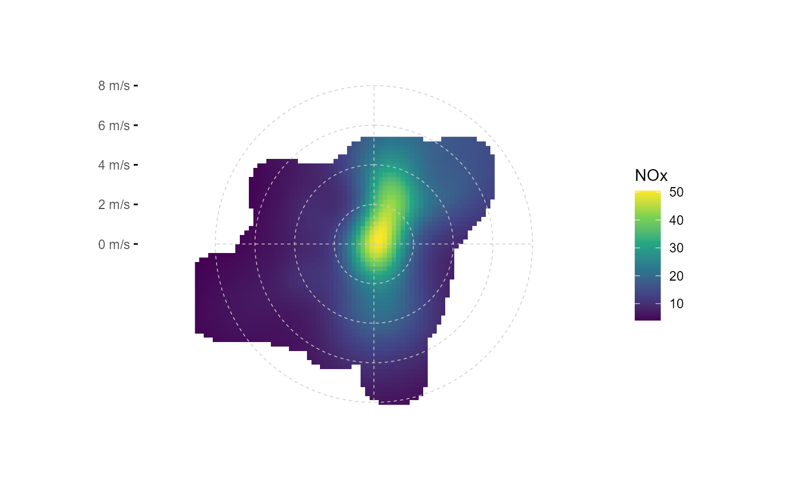
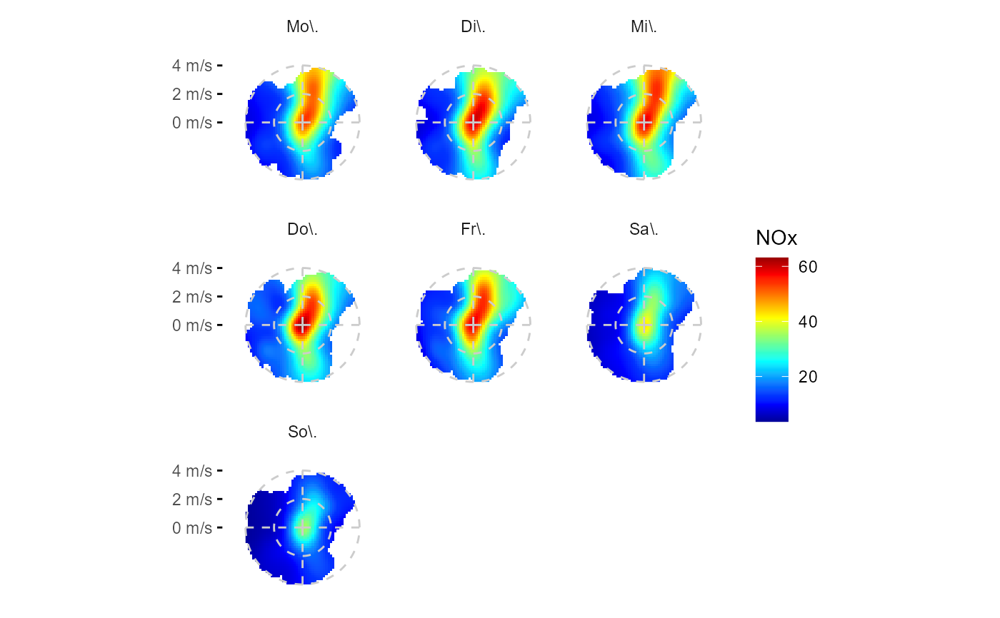

Inspired and derived from openair::polarPlot(), i.e. applying a stat function on data to yield a wind direction +
wind velocity heatmap, (in cartesian u, v wind component space); includes options for smoothing, flexible grid
setting, flexible stat functions, data extrapolation and plotting over a raster map.
ggpolarplot(data, mapping, nmin = 3, fun = "mean", fun.args = list(na.rm = TRUE), ws_max = NA, smooth = TRUE, k = 200, extrapolate = TRUE, dist = 0.1, pixels = 80^2, fill_scale = scale_fill_gradientn(colours = matlab::jet.colors(100), na.value = NA), ylabels = scales::unit_format(unit = "m/s"), breaks = waiver(), bg = NA, ...)
Arguments
| data | tibble containing wind speed, wind direction and air pollutant data |
|---|---|
| mapping | ggplot2 mapping, e.g. aes(wd = wd, ws = ws, z = NOx); required aesthetics: wd, ws, z |
| nmin | numeric, minimum number of data points to be averaged in one u, v wind component bin (i.e. wind speed / wind direction bin) |
| fun | character string, stat function to be applied at wind-bins |
| fun.args | list, arguments to fun |
| ws_max | maximum wind speed considered for plotting; wind speeds > ws_max are not plotted |
| smooth | TRUE/FALSE, should the result of |
| k | numeric, smoothing parameter for formular smoothing term s(..., k = k) in |
| extrapolate | TRUE/FALSE, should smoothed surfaced be extended further than bins with actual data? only applies if smooth == TRUE |
| dist | numeric < 1, maximum distance from bin at which extrapolation is done. dist is relative: 0.1 = 10% of total range. only applies if both smooth and extrapolate are TRUE |
| pixels | number of bins at the 2-dimensional u, v wind component coordinate system |
| fill_scale | ggplot2 continuous fill scale, e.g. |
| ylabels | function to format ylabels. Default adds unit " m/s" |
| breaks | waiver() or numeric vector, provides y-axis breaks |
| bg | raster map, e.g. ggmap object as plot background |
| ... | passed onto |
Value
ggplot2::ggplot() object
Examples
library(ggplot2) fn <- rOstluft.data::f("Zch_Stampfenbachstrasse_2010-2014.csv") df <- rOstluft::read_airmo_csv(fn) %>% rOstluft::rolf_to_openair() %>% dplyr::mutate(wday = lubridate::wday(date, label = TRUE, week_start = 1)) # simple ggpolarplot(df, aes(wd = wd, ws = ws, z = NOx))#> Warning: Removed 767 rows containing non-finite values (stat_wind2d).#> |======================================================|100% ~0 s remaining#> Warning: Removed 3825 rows containing missing values (geom_raster).# change smoothing degree, add custom breaks and change grid style, different fill scale ggpolarplot(df, aes(wd = wd, ws = ws, z = NOx), k = 25, breaks = seq(0,10,2)) + theme(panel.grid.major = element_line(linetype = 2, size = 0.25, color = "gray80")) + scale_fill_viridis_c(na.value = NA)#> #>#> Warning: Removed 767 rows containing non-finite values (stat_wind2d).#> |======================================================|100% ~0 s remaining#> Warning: Removed 3825 rows containing missing values (geom_raster).# no data extrapolation ggpolarplot(df, aes(wd = wd, ws = ws, z = NOx), extrapolate = FALSE, breaks = seq(0,8,2))#> Warning: Removed 767 rows containing non-finite values (stat_wind2d).#> |======================================================|100% ~0 s remaining#> Warning: Removed 5423 rows containing missing values (geom_raster).#> Warning: Removed 767 rows containing non-finite values (stat_wind2d).#> Warning: Removed 5423 rows containing missing values (geom_raster).# cap maximum NOx concentration and wind velocity ggpolarplot(df, aes(wd = wd, ws = ws, z = NOx), ws_max = 4, smooth = FALSE, breaks = 0:4) + scale_fill_viridis_squished(limits = c(0,50), breaks = seq(0,50,10), na.value = NA)#> #>#> Warning: Removed 767 rows containing non-finite values (stat_wind2d).#> Warning: Removed 3533 rows containing missing values (geom_raster).# like jet colors better, want it smoothed? ggpolarplot(df, aes(wd = wd, ws = ws, z = NOx), ws_max = 4, smooth = TRUE, breaks = 0:4) + scale_fill_gradientn_squished(limits = c(0,50), breaks = seq(0,50,10), na.value = NA, colors = matlab::jet.colors(100))#> #>#> Warning: Removed 767 rows containing non-finite values (stat_wind2d).#> |======================================================|100% ~0 s remaining#> Warning: Removed 1832 rows containing missing values (geom_raster).# change binning parameters ggpolarplot(df, aes(wd = wd, ws = ws, z = NOx), smooth = FALSE, pixels = 50^2, nmin = 10, breaks = seq(0,6,2))#> Warning: Removed 767 rows containing non-finite values (stat_wind2d).#> Warning: Removed 2151 rows containing missing values (geom_raster).# facetting ggpolarplot(df, aes(wd = wd, ws = ws, z = NOx), ws_max = 4, pixels = 50^2, k = 25, breaks = 0:4) + facet_wrap(wday~., scales = "fixed")#> Warning: Removed 767 rows containing non-finite values (stat_wind2d).#> |======================================================|100% ~0 s remaining |======================================================|100% ~0 s remaining |======================================================|100% ~0 s remaining |======================================================|100% ~0 s remaining |======================================================|100% ~0 s remaining |======================================================|100% ~0 s remaining |======================================================|100% ~0 s remaining#> Warning: Removed 6486 rows containing missing values (geom_raster).# different stat fun ggpolarplot(df, aes(wd = wd, ws = ws, z = NOx), fun = "quantile", fun.args = list(probs = 0.95, na.rm = TRUE), breaks = seq(0,10,2))#> Warning: Removed 767 rows containing non-finite values (stat_wind2d).#> |======================================================|100% ~0 s remaining#> Warning: Removed 3825 rows containing missing values (geom_raster).# facetting by stat # ggpolarplot(df, aes(wd = wd, ws = ws, z = NOx), fun = list("mean", "median"), ws_max = 4, # pixels = 50^2, k = 25, breaks = seq(0,10,2)) + # facet_wrap(stat~.) # => hm, warum funzt das nicht??